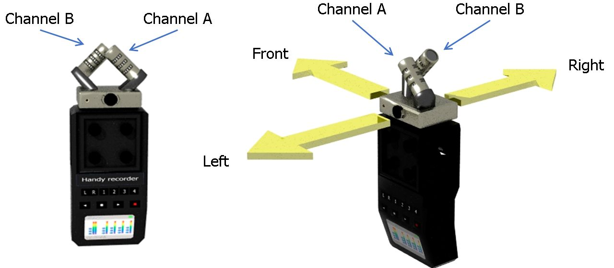
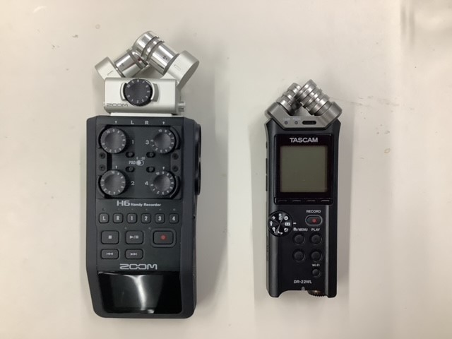
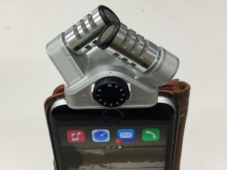
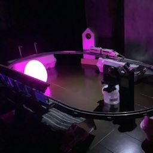
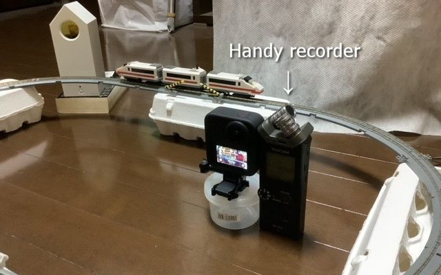
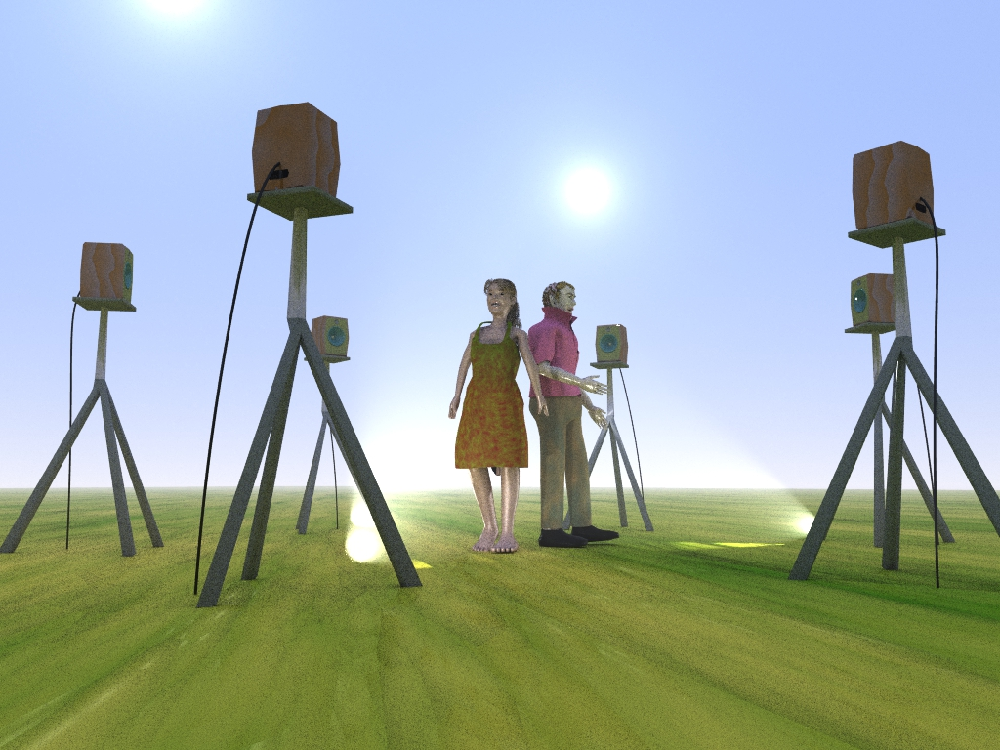

Dual microphone system for
2D panoramic sound
Use only 2 microphones,
get 360 degrees of panoramic sound!
(Bicoordinate stereo)
Last update; 26 February, 2024
Introduction
In principle, a 3-point measurement is needed to get a 2-dimensional spatial information. It is not easy, however, to use 3 or more microphones at the same time since the standard recording equipment usually has only the left and right tracks.
The solution is provided here. In this page, you will see that 2-dimensional spatial sound can be captured by the system that consists of only 2 microphones and that 360 degrees of immersive panoramic sounds can be conveyed by a simple stereo audio data stream without using any special format like '5.1 surround' and 'Ambisonics.'
Features
Here, we propose a microhone system that consists of a pair of cardioid microphones. As can be seen in Fig. 1, these microphones are assigned to Channel A and Channel B.
Since a cardioid microphone is actually a 2-point recording system, 2-dimensional spatial sounds can be acquired by using only 2 microphones.

Fig. 1 Dual microphone system
A stereo handy recorder with the dual microhone system (Left) and
its orientation (Right) are shown.
The microphone system consists of a pair of cardioid microphones.
These microphones face the opposite directions in the horizontal plane. When Channel A faces the front, Channel B faces the rear (Fig. 2). The system's inter-channel level difference, therefore, depends on the one-dimensional (front-to-rear) spatial property of the sound for each frequency bin. If the sound comes from the front, for instance, its level is supposed to be higher in Channel A than in Channel B.

Fig. 2 Top view of the system
A top view (Left) and a schematic illustration (Right) of the system are shown.
At the same time, the microphones are aligned side by side with a distance r in between. This induces the inter-channel phase difference that depends on another one-dimensional (left-to-right) spatial property of the sound.
By combining the inter-channel level and phase differences, 2-dimensional spatial information of the sound can be acquired.
Inter-channel level and phase differences are plotted as a function of direction in Fig. 3. It is clear that inter-channel level difference depends on the spatial property along the front (0°) to rear (180°) dimension while inter-channel phase difference depends on the spatial property along the left (-90°) to right (90°) dimension. It can be noted that these graphs are shifted by 90 degrees from each other. In other words, they are in quadrature to each other. That is why 2-dimensional spatial property can be dealt with in a simple stereo data stream.

Fig. 3 Inter-channel differences
Theoretical inter-channel level difference (Top) and
ideal inter-channel phase difference (Bottom) are plotted as a function of direction.
We confirmed that handy recorders 'ZOOM H6' and 'TASCAM DR-22WL' (Fig. 4) can be used for this purpose. The stereo microphone system 'ZOOM iQ6' (Fig. 5) is also available. An iOS app for realtime recording and playing has been developed (for research, not to be released).
See dualmic_sys.pdf (447 KiB) for more information about this method.

Fig. 4 Handy recorders with the microphone system
Each of ZOOM H6 (Left) and TASCAM DR-22WL (Right) has the stereo microphone system.

Fig. 5 Stereo microphone system (ZOOM iQ6) attached to a smartphone.
Demonstrations
In the following demo clips, your device and browser have to support 'AudioWorklet.'
Please take a look at the demo clips below (
Stereo headphones are necessary).
By moving the mouse pointer to the left or right in these clips,
you can control panning of the scene.
It may take some time to load data. Wait until the instruction on the screen says
'Click to start' or 'Tap to start.'
 cygne2d |
* * |
 at11 |
The audio files in the clips above are 'cygne2d.wav' and 'at11.wav.' As can be seen in Fig. 6, 'cygne2d.wav' has only 2 tracks. Immersive 360-degree panoramic sound, however, can be heard in the playback. The listener can control panning of the sound and even make a beam targeted at any direction in the horizontal plane by clicking on the 'BEAMFORMER' button on the bottom center of the screen during the reproduction.

Fig. 6 PCM data streams in 'cygne2d.wav.'
It can be seen that the file has only 2 tracks (Left and Right).
As shown in Fig. 7, sound in 'at11.wav' was recorded with a stereo handy recorder TASCAM DR-22WL.

Fig. 7 Handy recorder placed in the scene
Stereo handy recorder `TASCAM DR-22WL' was placed in the
scene to capture 2D panoramic sound.
Multi-loudspeaker reproduction
Since the 2-dimensional spatial property can be conveyed by the conventional stereo audio format, panoramic sound can be generated from the stereo data. Generated panoramic sound can be reproduced not only by headphones but also by the multi-loudspeaker system (Fig. 8) without using any special data format like '5.1 surround' and 'Ambisonics.'

Fig. 8 Panoramic sound spot system
2D panoramic sound can be generated from the stereo audio data and reproduced
by the multi-loudspeaker system.
Try bicoordinate stereo recording
If you are an owner of either the stereo microphone system 'ZOOM iQ6' or the handy recorder such as 'ZOOM H6' and 'TASCAM DR-22WL,' you can experience bicoordinate stereo recording in this page.
The orientation of the microphone system is crucial. Be sure that the microphone system faces upward and 2 microphones are aligned side by side as shown in Fig. 1 and Fig. 2.
Then, you can also try the pages below.
- If you use 'ZOOM H6' with the microphone capsule 'ZOOM XYH-6,' Record with ZOOM H6
- If you use 'ZOOM iQ6,' Record with ZOOM iQ6
- If you use 'TASCAM DR-22WL,' Record with TASCAM DR-22WL
{kind=link}
{kind=link}
{kind=link}
In these pages, a JavaScrit file named 'PanoSterec.js' is used. It is an open source software. Its GitHub repository can be found here.

Copyright© 2024 Neuroethology and Bioengineering Lab.